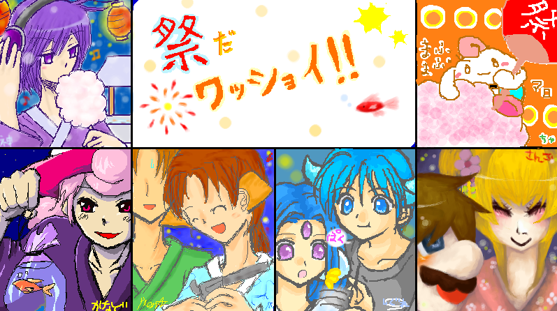

星空の奇跡色。一周年記念絵チャット開催！
８月４日、星空の奇跡色。一周年記念として絵チャットを開催いたしましたー！
あまりにも豪華メンバーで、自分緊張でガチガチになってしまって（笑）
全く持って主催者のくせに仕切れてなかった様な気がしなくもありませんが（反れる目線/待ちなさい）、
とっても楽しかったですー！ｖＶ
それでは、遅くなってしまいましたが；ログ参りますー！
カップリングがありますのでご注意。
落書きを含めたら随分色々と描いていたのですが、とりあえずログは合作一枚です。
…え？日付変更線越えた後？
ははは、もちろん裏ログもあるに決まっているでは無いですかはっはっはｖ
とにかく、表としてのログをどーんっ！

誰か私をこのお祭り会場に連れ去ってください（どーん。
げふげふ；
お題は夏から連想して「お祭り」。マリオ・メテオスごっちゃで合作となりました。
上段左から神無月水龍さんのケイビオス擬人化、蓬茶葉さんのマロ、
下段左からかなぐさんのビビアン擬人化、星詩里音のテラ＆タータ、
透水時雨さんのジオライトとオレアナの擬人化でジル君とレナウさん、燦子さんのマリオ＆ピーチ姫です＾＾*
タイトルロゴは、文字だけ私が描きまして、装飾などはかなぐさんと神無月さんがやって下さいました。
いや、あの、ちょっと待って下さい。私思いっきりこれじゃレベル的に場違いですよ奥さん。
描いてる最中、キャンパスに釘付けになっていた事は言うまでも無いですとも！∑ｄ
お祭りの小道具がまた皆さんお似合いで…っ！ちなみに自分は射的のつもりだったんですが、何かを間違えた気がします（遠い目。
深夜モードのイラストは裏へどうぞｖ
参加してくださった皆さん、どうもありがとうございましたー！！ｖ